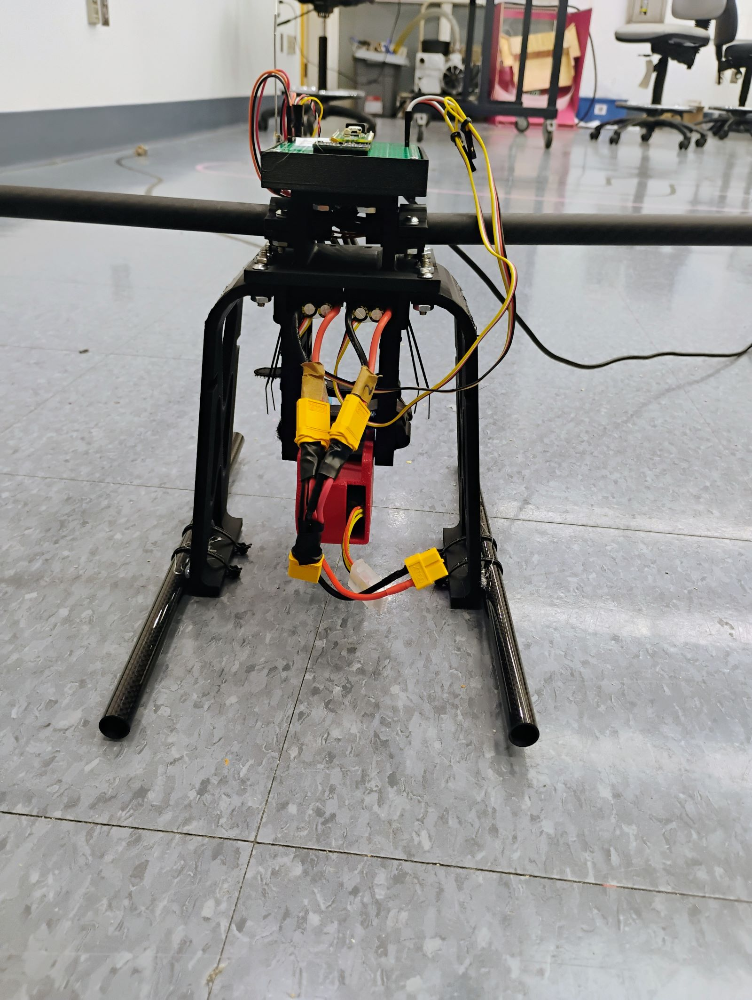
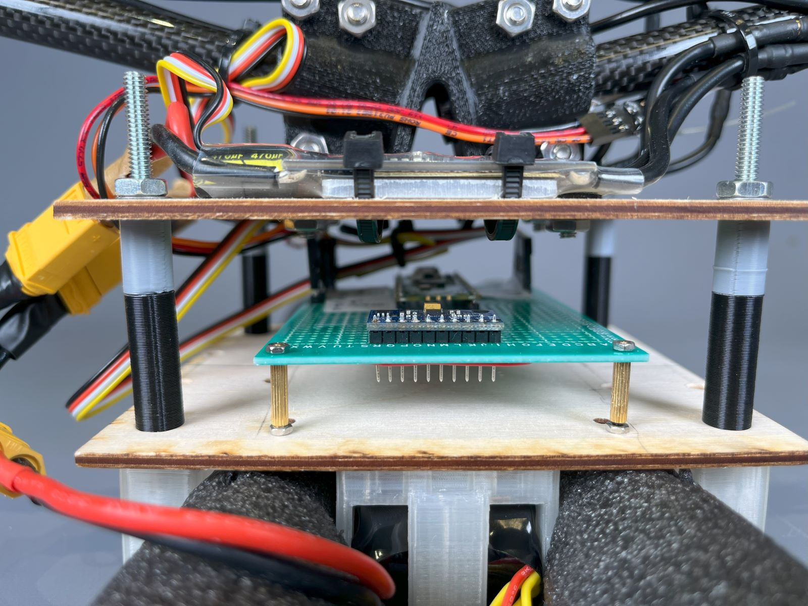
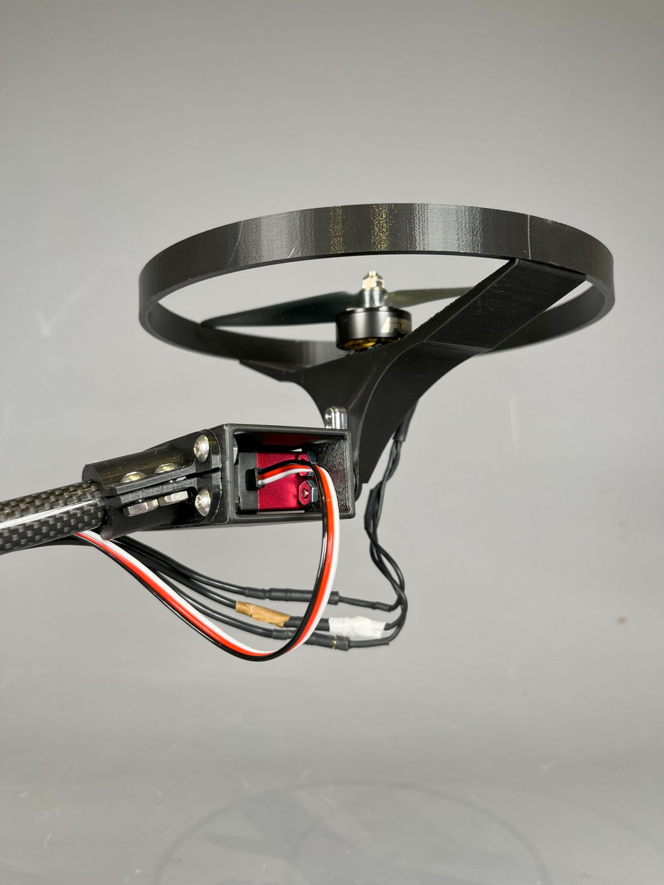
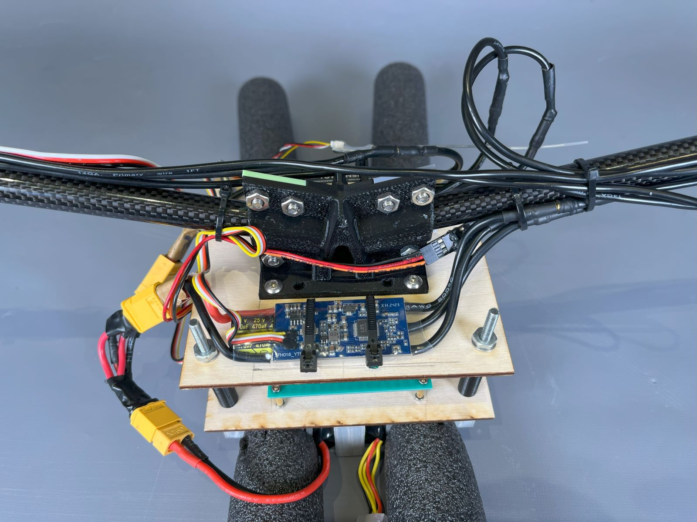
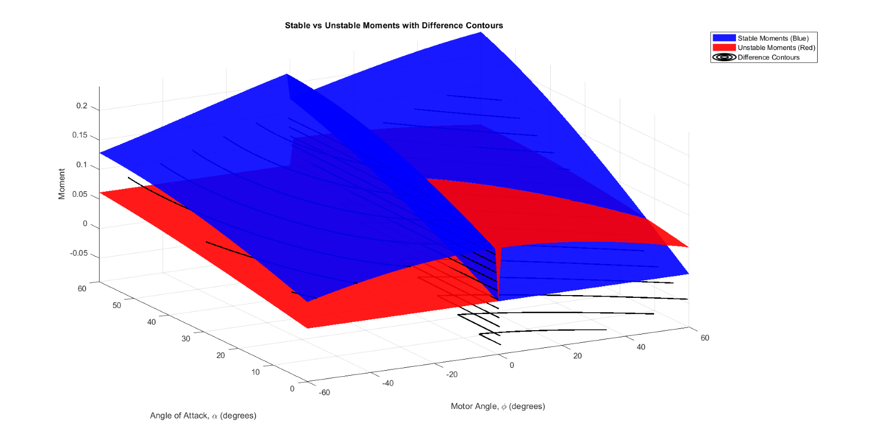

Thorondor — RC Bicopter

I built an RC Bicopter as part of a five student team, the Pi-Pielots. Our goal was to build a bicopter capable of stable hover with a custom flight controller over the course of three two-week sprints. Throughout this project, I learned to better collaborate with other engineers, particularly in electrical and firmware integration, and used my skills in mechanical design while deepening my understanding of system modeling.

Initially, I worked with our team's electrical engineer to scope out components. I fixed two starting parameters: a 2:1 thrust-to-weight ratio, enabling powerful vertical flight, and a ratio of 2.5:1 of total aircraft mass to electronics mass. From here, I created an optimization script to iteratively compare combinations of propellers and motors, then base vehicle mass (and thrust-to-weight ratio) on their masses and the masses of the ESCs and LiPo battery needed to run them. I chose servos based on my torque calculations, ultimately selecting ones that were readily available and produced significantly more than sufficient torque.

I iteratively developed the mechanical design of the drone using rapid prototyping and kinematic calculations to optimally prioritize light weight, airframe stiffness, crash resilience, affordability, and inherent stability. The initial designs were developed with an eye toward evolving this into a tiltrotor aircraft, capable of both horizontal and vertical flight.
I designed a robust 3D-printed PLA airframe with attachments for a fairing and other aerosurfaces, along with landing gear made from 3D-printed PETG. I also designed adjustable mounts for the battery (the aircraft’s single largest mass component) which allowed for manual tuning of the center of mass to optimize stability.

When it became clear that flight controller development was the key task at hand, I replaced this with a lightweight design using a small 3D-printed clamp. A pair of wooden plates connected with bolted joints protected the electronics. Additionally, I replaced the landing gear with simple pieces of foam to make the aircraft more robust during testing, where crashes were frequent.

Like a quadcopter, a bicopter can exert some control over its attitude by changing the magnitude of the thrust from each motor. However, two axes of motion are controlled by changing the direction of thrust. I connected the motors to servos, which could rapidly adjust the tilt angle.

The servo/motor pods were attached by 3D-printed clamps to a pair of carbon fiber tubes, selected for their light weight and stiffness. I maximized the vertical cross section of the central clamp, as most loading was due to either the weight of the motor pods at the end (when the aircraft was landed) or their vertical thrusts (during flight).

To inform the development of the flight controller, I developed a model of the aircraft’s stable and unstable regimes. I determined a center of mass for the aircraft based on an accurate CAD model and then created a model which incorporated the gravitational forces on mass components above and below the center of mass, as well as the motor thrusts, at all possible motor angles and aircraft pitch inclinations. This led to a multivariable optimization problem in which I sought to determine boundary conditions for the aircraft’s stable regime.
This helped improve the flight controller, which used a PID loop to automatically maintain the aircraft’s stability.